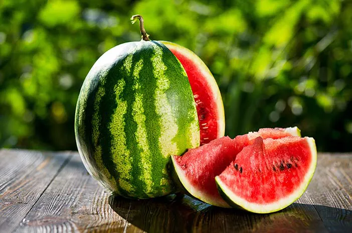
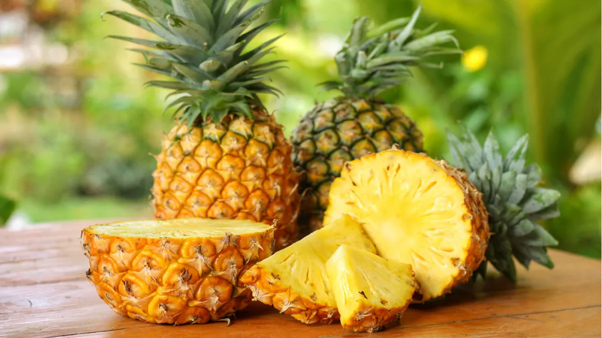

semangka adalah tanaman merambat yang berasal dari daerah setengah gurun di Afrika bagian selatan.tanaman ini masih sekerabat dengan dengan labu-labuan,melon,dan ketimu. semangka biasa dipanen buahnya untuk dimakan segar atau dibuat jus.
Nanas adalah tumbuhan trpis dengan buah yang dapat dimakan dan tumbuhan yang paling penting secara ekonomi dalam family bromeliaceae.Nanas adlah tumbuhan asli Amerika serikat, dan telah dibudayakan disana selama berabad-abad.

